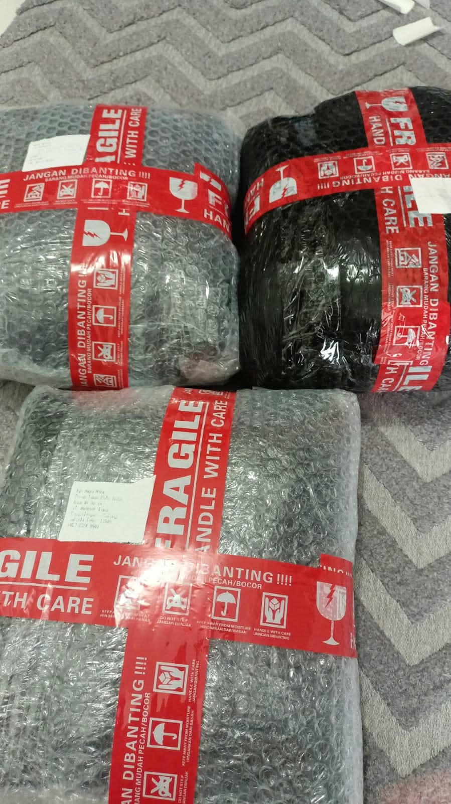

Lion Parcel Terdekat di Cileunyi, Bandung - Alamat, WA, Jam Buka & Cek Ongkir

Cari Lion Parcel terdekat di Cileunyi, Bandung? Buat kamu warga Kecamatan Cileunyi - mulai dari Cileunyi Kulon, Cileunyi Wetan, Cimekar, Cinunuk, Cibiru Wetan, dan Cibiru Hilir - agen Lion Parcel terdekat yang paling gampang dijangkau adalah Lion Parcel Bandung POS101 Nanjungmekar, Rancaekek. Lokasinya pas di jalan utama Raya Barat Cicalengka, tinggal lurus dari arah Cileunyi ke Rancaekek, nggak pakai muter-muter.
Di artikel ini, Min kasih lengkap: alamat terdekat dari Cileunyi, nomor WA yang fast respon, jam buka, cara kirim paket dari Cileunyi tanpa harus datang ke agen, sampai layanan yang paling sering dipakai seller & warga Cileunyi.
Chat WA Dulu, Biar Nggak Salah Alamat!
Mau kirim paket dari Cileunyi? Chat dulu aja, Min bantu cek ongkir & jadwal pick up gratis.
💬 Chat WhatsApp 0851-8309-04861. Alamat Lion Parcel Terdekat dari Cileunyi, Bandung
Ini alamat agen yang paling dekat dan paling sering dipakai warga Cileunyi:
- Nama Agen: Lion Parcel Bandung POS101 Nanjungmekar Rancaekek
- Alamat: Jl. Raya Barat Cicalengka RT 1 RW 1, Nanjung Mekar, Rancaekek, Kabupaten Bandung, Jawa Barat
- Patokan: Di jalan raya utama Rancaekek - Cicalengka, nggak masuk gang. Gampang dicari di Google Maps.
- Rute dari Cileunyi: Cileunyi - Cibiru - Rancaekek, sekitar 15-25 menit naik motor lewat Jl. Raya Cileunyi - Rancaekek, tergantung titik awal kamu di Cileunyi Kulon / Wetan / Cinunuk / Cimekar.
- Jam Operasional: Senin-Minggu, 08.00-20.00 WIB, buka tiap hari termasuk Minggu.
- WhatsApp: 0851-8309-0486
Kenapa ini jadi yang terdekat? Karena Kecamatan Cileunyi itu berbatasan langsung dengan Rancaekek. Jadi daripada muter ke Bandung kota yang macet, mending ke Rancaekek yang jalurnya lurus. Banyak seller online di Cinunuk, Cimekar, Cibiru Wetan, dan karyawan di kawasan industri Rancaekek - Cileunyi yang kirim paketnya lewat sini.
📍 Lokasi Lion Parcel Bandung POS101 Nanjungmekar
Jl. Raya Barat Cicalengka RT 1 RW 1, Nanjung Mekar, Rancaekek, Kabupaten Bandung, Jawa Barat.
🗺️ Buka Lokasi di Google Maps2. Warga Cileunyi Nggak Harus Datang - Bisa Pick Up Gratis!
Ini yang paling enak buat warga Cileunyi, Bandung. Kalau kamu mager, sibuk jualan, atau paketnya banyak dan berat, kamu nggak wajib datang ke agen.
- Pick Up Gratis: Chat WA 0851-8309-0486, kirim foto paket + alamat lengkap di Cileunyi + berat kira-kira, nanti kurir pick up ke rumah / toko kamu.
- Cocok Buat: Seller Shopee / TikTok / Tokopedia di Cileunyi, UMKM makanan, fashion, konveksi, dan yang kirim dokumen ke luar kota.
- Wilayah Pick Up Cileunyi: Cileunyi Kulon, Cileunyi Wetan, Cimekar, Cinunuk, Cibiru Wetan, Cibiru Hilir, dan sekitarnya.
- Cara Pick Up: 1. Packing rapi 2. Foto paket + tulis alamat tujuan di kertas 3. Chat WA, tunggu kurir datang 4. Bayar di tempat / transfer, resi langsung dikirim via WA.
Jadi buat yang nanya "Lion Parcel terdekat di Cileunyi di mana?" jawabannya: agennya di Rancaekek, tapi layanannya sampai ke rumah kamu di Cileunyi.
3. Layanan & Harga Buat Warga Cileunyi, Bandung
Di Lion Parcel POS101, warga Cileunyi bisa pakai semua layanan Lion Parcel:
- ONEPACK: Paling cepat, buat paket urgent / dokumen penting.
- REGPACK: Reguler, paling sering dipakai seller, harga hemat.
- LANDPACK: Buat paket berat / besar, lebih ekonomis via jalur darat.
- BIGPACK: Buat paket jumbo, furniture, motor, barang pindahan.
- INTERPACK / Internasional: Buat kirim ke luar negeri, termasuk ke Malaysia, Singapura, Australia, dan lainnya.
Tips Hemat Ongkir dari Cileunyi: Timbang dulu di rumah, packing pakai kardus yang pas (jangan kebesaran, biar nggak kena volume), dan kalau kirim banyak, tanya harga seller / langganan ke WA. Lion Parcel juga punya toleransi berat, 1,5 kg dihitung 1 kg untuk layanan tertentu, jadi bisa lebih hemat.
4. Apa Saja yang Bisa Dikirim dari Cileunyi?
Yang paling sering dikirim warga Cileunyi lewat Lion Parcel POS101:
- Makanan kering, keripik, basreng, seblak kering, kopi, dan oleh-oleh Bandung
- Pakaian, hijab, konveksi, dan produk fashion dari pengrajin Cileunyi
- Dokumen, ijazah, berkas lamaran kerja, dan surat penting
- Kosmetik, skincare, dan produk online shop
- Sparepart motor / mobil, elektronik, dan barang toko
Yang nggak bisa dikirim: barang mudah meledak, narkoba, barang ilegal, dan barang yang dilarang Lion Parcel. Kalau ragu, foto aja barangnya, kirim ke WA, Min cekin boleh dikirim apa nggak.
Kesimpulan
Jadi kalau kamu cari Lion Parcel terdekat di Cileunyi, Bandung, agen terdekat dan paling gampang adalah Lion Parcel Bandung POS101 Nanjungmekar Rancaekek. Lokasinya di jalan raya utama, buka tiap hari 08.00-20.00, dan bisa pick up gratis sampai ke rumah kamu di Cileunyi.
Nggak usah bingung lagi, langsung aja save nomornya, chat WA, dan kirim paket kamu hari ini juga!
Nama Agen: Lion Parcel Bandung POS101 Nanjungmekar Rancaekek
Jam Operasional: Senin–Minggu, 08.00–20.00 WIB
Alamat: Jl. Raya Barat Cicalengka RT 1 RW 1, Nanjung Mekar, Rancaekek, Kabupaten Bandung
WhatsApp: 0851-8309-0486
Melayani: Cileunyi, Cileunyi Kulon, Cileunyi Wetan, Cimekar, Cinunuk, Cibiru Wetan, Cibiru Hilir, Rancaekek & sekitarnya